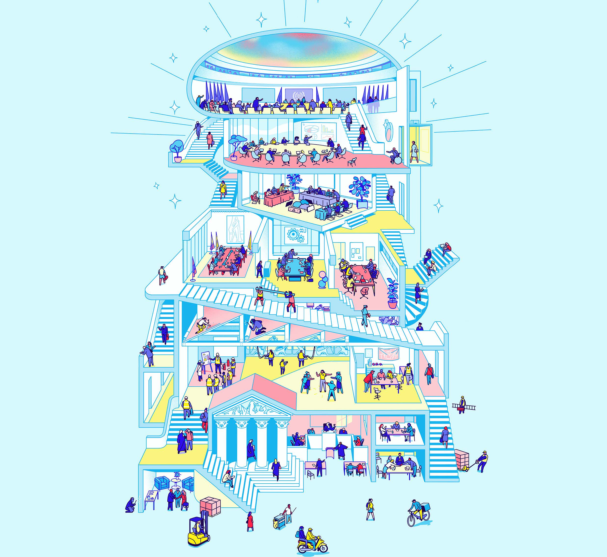

Online Master in Industrial and Employment Relations
A world class university Master's degree for industrial relations practitioners, delivered jointly by the ITCILO and the University of Turin. Sixty ECTS credits over ten months, online on the ITCILO eCampus, with an optional residential phase in Turin and Geneva.

Why this Master
Governments, workers' organizations and employers' and business membership organizations operate in a political, economic, social, cultural and technological environment that obliges them to adapt their strategies continuously. A sound understanding of contemporary trends and challenges across different industrial and employment relations systems has become a compelling professional need.
The International Training Centre of the International Labour Organization, in partnership with the University of Turin, offers the Online Master in Industrial and Employment Relations to meet that need. The programme runs over ten months and carries 60 ECTS credits. It combines a distance learning phase with live webinars, an optional residential phase at the ITCILO campus in Turin and at ILO headquarters in Geneva, and a final distance learning phase devoted to the Master's thesis.
The online learning journey allows students to engage continuously with a global faculty drawn from the ILO, from universities and from training and research institutions worldwide, alongside practitioners and fellow students from every region of the world.
The Master's programme combines the sound academic background of the University of Turin with the ITCILO's international training experience. An international approach has been applied to the content, the methodology as well as to the composition of the faculty.
Modern methods
Learn by doing, through case studies, workshops, and group exercises.
Inspiring discussions
Exchange ideas with international students and faculty.
High-level resources
Engage with experts from the ILO and the ITCILO, practitioners and university professors.
What you will be able to do
The programme addresses the question of how to support governments, employers' organizations and workers' organizations on industrial relations matters within systems that are unfamiliar. Students are exposed to international and comparative industrial and employment relations systems, with a view to understanding the implications for current systems and practices.
On successful completion of the Master's programme, students will be able to:
- Compare industrial and employment relations systems across countries using established analytical frameworks;
- Apply legal, economic and social science reasoning to industrial relations decisions;
- Use labour and management relations tools at every level, from the enterprise to the international level;
- Advise government, employers' and workers' representatives on industrial and employment relations questions;
- Conduct and defend original applied research in the field.
Three phases
The Master's Programme will be divided into two mandatory distance-learning phases and one face-to-face component that is optional. During Phase 1, the programme's online sessions typically take place on Mondays and Thursdays from 14:00 to 15:30 and from 16:00 to 17:30 (CEST/CET, Turin time). Students are informed in advance of any adjustments to the schedule.
How you will learn
Professors, practitioners and other resource persons will use lectures, case-studies, case law judgments, excerpts of collective agreements and legislation, discussions, group-work and practical exercises to strike a balance between theory and practice and to stimulate interaction with the resource persons and among students.
Resource persons
Resource persons are selected on their professional experience and subject matter expertise. They are experts from the ILO and the ITCILO, university professors and practitioners. Seven Masterclasses open the main blocks of the programme and are listed under Programme.
Programme 2026–2027
The distance learning phase runs from the opening on 21 September 2026 to the closing session on 29 April 2027, across seven macro-competence areas and five examinations. Seven Masterclasses open the main blocks of the programme and are listed below. All times are Turin time (CEST/CET).
Seven areas of study
Phase 1 is built around seven macro-competence areas. Select one to filter the agenda to its sessions.
Illustrations are details of the Master's cover image. © ITCILO.
The resource persons whose sessions are confirmed, in the order they first appear in the programme, with the sessions each leads. Experts from the ILO and ITCILO, university professors and practitioners. A name is published here only once the session has been confirmed in the agenda; sessions still being arranged appear in the agenda without a name.
Resources
Self-guided tools
Self-paced ITCILO and ILO tools on the eCampus. Work through them at your own pace alongside the live sessions. You will be asked to sign in to the eCampus.
The Master's thesis
Students are required to carry out individual research in their home country for the preparation and submission of a thesis. The thesis is assessed against the seven criteria of the MIER assessment framework. Students receive a PASS or FAIL outcome; in borderline cases the programme may require an oral examination.
Milestones
Methodology of Research and Thesis: thesis topic
Darrin Dookie
Methodology of Research and Thesis
Darrin Dookie
Methodology of Research and Thesis 3 · Writing skills
Darrin G. Dookie
Methodology of Research and Thesis 4: final thesis guidance
Darrin G. Dookie
Phase 3: distance learning for the drafting of the thesis
Individual research carried out in the home country.
Thesis outline presented
Presented in the closing session of Phase 1, together with the MIER team.
Thesis completed and submitted
Submission within the set deadline and quality requirements is a condition for the award of the degree.
Formal requirements
- At least 15,000 words
- Normally approximately 40 to 60 pages
- Times New Roman 12
- 1.5 line spacing for the text
- Follow the approved thesis template
- Include appropriate academic references
- Demonstrate appropriate research methodology
- Contain a clear research question or problem
- Provide appropriate analysis
- Provide conclusions that answer the research question
The intellectual line
A strong thesis has a clear intellectual line. Each step should follow from the one before it.
The seven assessment criteria
The thesis is assessed against seven criteria.
Quality is not quantity
The quality of a thesis is not determined by how much information it contains. The central question is: